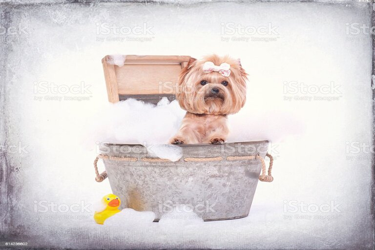
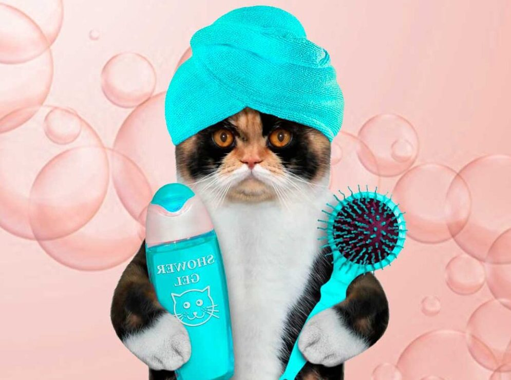
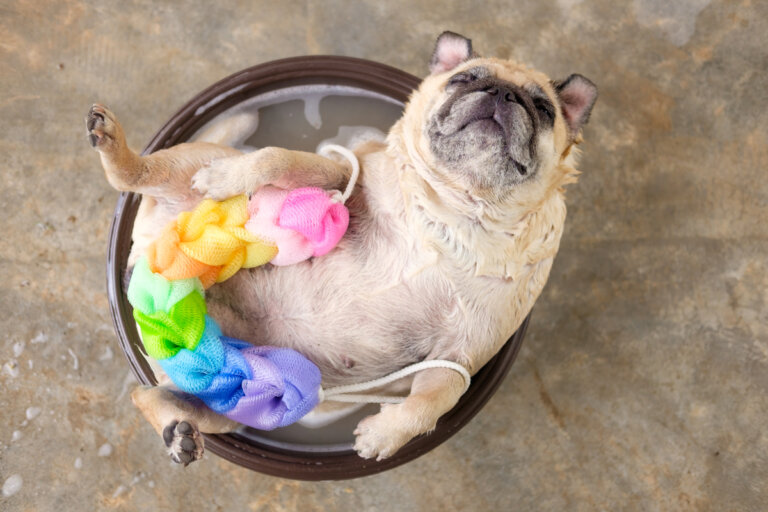
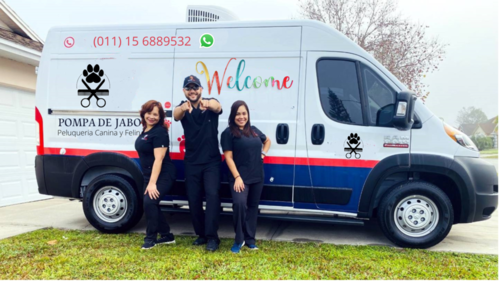

BIENVENIDOS
Para nosotros como a nuestros clientes, las mascotas son un integrante mas de la familia, es por eso que en nuestro salon les bridamos amor y profesionalismo para que vivan la mejor experiencia y se sientan como en su casa.
La higiene es una parte importante del cuidado de su mascota. Todas las mascotas se benefician de la limpieza regular, ya sea una raza de pelo corto o una con una melena larga y esponjosa, el aseo regular ayuda a asegurar que su mascota este saludable y comoda.
Mantener el pelaje de su mascota limpio mediante la eliminación de la suciedad y el pelo muerto ayuda a estimular el crecimiento del cabello y reduce la cantidad de pelo depositada en los muebles del hogar.
Se atiende con previa reserva de horas, lo que permite entregar una atención personalizada y dedicada a las mascotas, sin mayor espera ni stress, a modo de contribuir a la experiencia de las mascotas en nuestras instalaciones.
Durante el proceso de baño y aseo utilizamos agua a temperatura moderada en piletas diseñadas exclusivamente para la comodidad de tu perrito o gatito. Todos los productos cosmeticos que aplicamos son certificados y se aplican de acuerdo a la piel, raza y pelaje de cada mascota.

Beneficios de la peluquería canina y felina:
En nuestra peluquería ofrecemos las últimas técnicas específicas para cada raza o tipo de pelo, tratamiento de piel, estética y belleza en general. Si te decides a venir, ahorrarás tiempo, evitarás tener que limpiar tu baño después y, sobre todo, te asegurarás de que tu mascota recibe una higiene completa. ¡Confía en nosotros para el cuidado de tu mascota.
- Limpiar habitualmente los oídos ayuda a minimizar los tapones y previene infecciones.
- El cepillado dental previene la enfermedad periodontal y evita la acumulación de sarro y placa.
- El aseo personal y el baño regular previene los nudos y enredos. Además reduce la pérdida de pelos promoviendo la regeneración de un pelaje más sano y súper brillante.
- El cepillado manual evita la formación de bolas de pelo estomacales, sobre todo en gatos, pues pasan mucho tiempo aseándose.
- Detección de cuerpos extraños: verrugas, parásitos, o cualquier otro tipo de problema cutáneo. ¡También es una manera de comprobar la salud de tu mascota y saber si necesita ir al veterinario!
¡¡Los perros y gatos más guapos!!
La salud no es incompatible con la belleza: tras un pasar por nuestra peluquería tu mascota no sólo estará como nueva sino que además estará súper guapo y limpito, y lucirá un aspecto físico agradable y saludable.


¿No podés traer a tu mascota al salón? - Nosotros nos ocupamos de su traslado
¡No te hagas problema! ¡Ahora ofrecemos un servicio de recogida y entrega para su peludo amigo!, en el cual buscamos a tu mascota por el domicilio, realizamos el servicio en nuestro salón y lo llevamos de vuelta.
Además de brindarle amor y atención a su mascota cuando usted no está, nos encargamos de su traslado, por la mañana y por la tarde de Lunes a Viernes. Se requiere un aviso anticipado.Las citas deben programarse con al menos un día de anticipación. El costo total se calculará de acuerdo con su dirección. A su elección, podemos usar su propia caja o nuestra cómoda caja de viaje. Todas las tarifas de entrega deben procesarse al momento de programar su cita.
Recogida: de 8 a.m. a 12 a.m./ Entrega: de 2:00 p.m. a 8 p.m.
:) Contamos con Posnet Inalámbrico para que puedas abonar con todas las tarjetas sin inconvenientes.
Contactanos para conocer las zonas de cobertura y costos.
